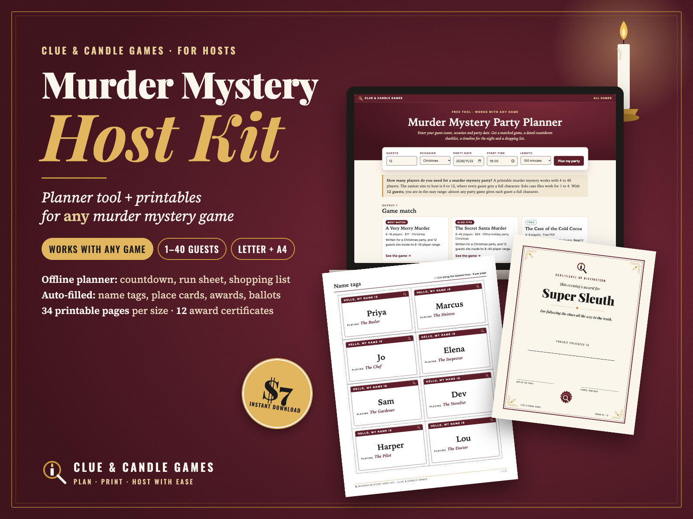
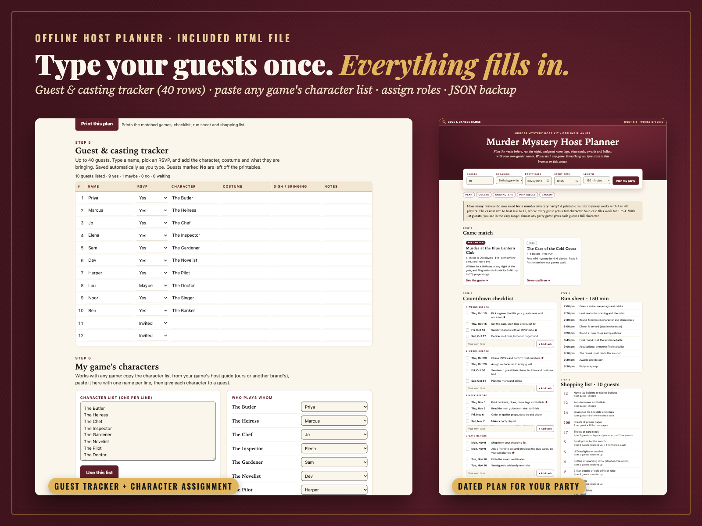
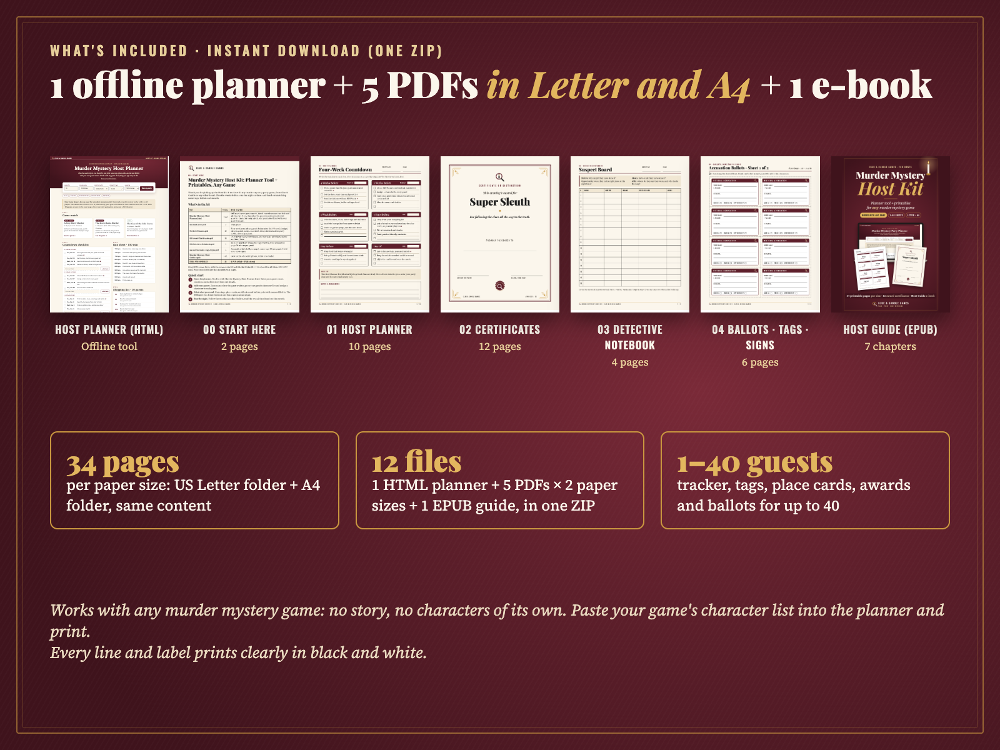
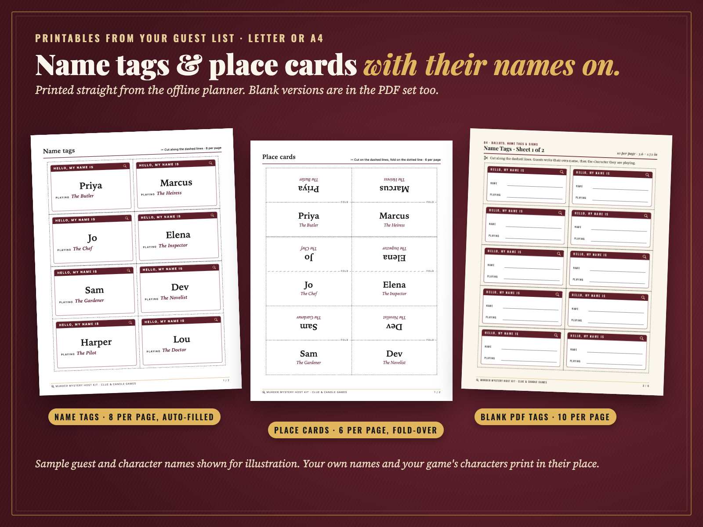
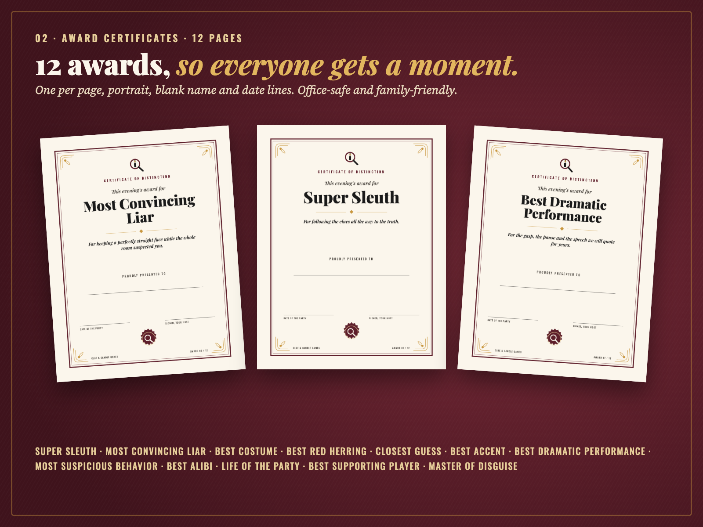
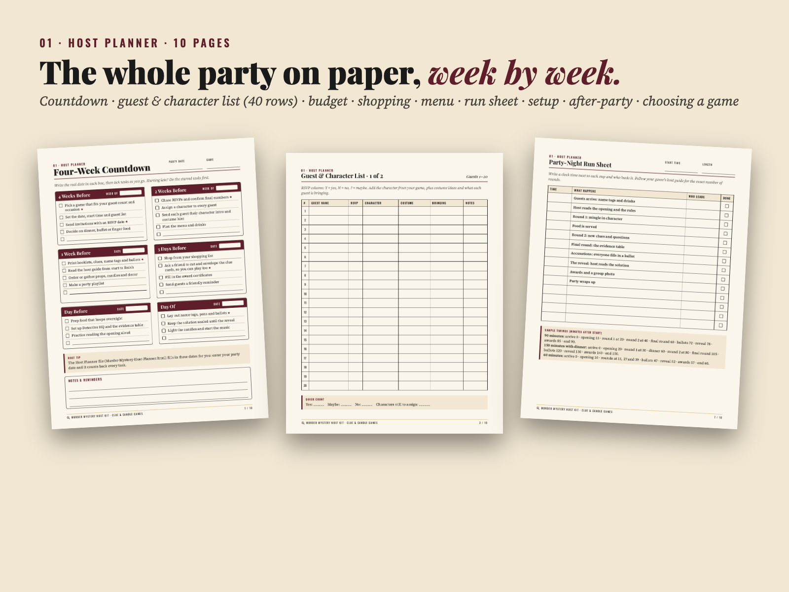
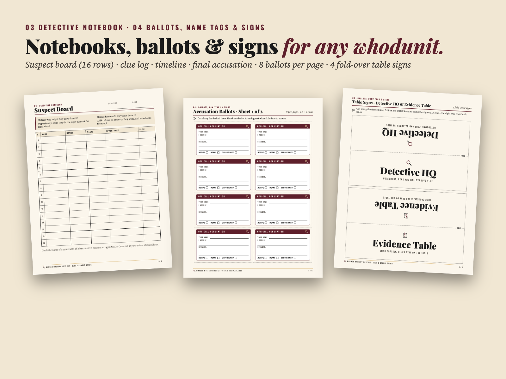

Plan any murder mystery party in one evening: an offline planner that dates every task for you, plus name tags, ballots and 12 award certificates printed with your guests' names. 1–40 guests · US Letter and A4 · works with any murder mystery game (ours or another brand's). From Clue & Candle Games, the games imprint of Hustle Studio.
Try it free first: the free online Murder Mystery Party Planner gives you the game match, dated checklist, run sheet and shopping list right now, no email or signup. Want to test a whole game too? Download our free mini mystery, The Case of the Cold Cocoa (PDF). What the paid kit adds

$7.00 USD, one-time · instant download · no subscription
Buy now: $7At checkout the product is listed as "Murder Mystery Host Kit: Planner Tool + Printables, Any Game" by Hustle Studio.
Not happy for any reason? Email chenphien@gmail.com within 14 days of purchase for a full refund of the $7, no reason needed (see Terms). The refund is issued through Waffo Pancake, our merchant of record, back to your original payment method.
File won't open, or a page doesn't print right on your printer? Email us your browser, printer and paper size. We'll help you fix it or send a corrected file, and if that doesn't solve it, you get your money back.
🔒 Secure checkout. Payment is handled by Waffo Pancake, our merchant of record. Waffo processes the payment with common payment methods, handles any sales tax or VAT that applies and emails you a receipt. Your card details go to Waffo, never through this shop.
📥 Instant download. Right after payment you land on your download page with the ZIP and every file on its own. Nothing is shipped.
Every picture below shows real pages from the PDFs or real screens and printouts from the planner file. Guest names on the sample name tags (Priya, Marcus and so on) are for illustration only; your own guests' names print in their place. Click any image to open it full size.






The Start Here guide (file 00) appears in image 2. The live free planner shows exactly how the dated checklist, run sheet and shopping list work before you pay.
Hosting a murder mystery party is mostly logistics: when to send invitations, who plays whom, how much food to buy, what happens at 8:15 pm, and how to end the night so everyone feels like a winner. The Host Kit handles that part, for whichever game you are playing.
The offline Host Planner (HTML file). Enter your guest count (1 to 40), occasion, party date, start time and length (60, 90 or 150 minutes). You get:
The PDF set (blank, for writing by hand). Every PDF comes in US Letter and A4 with the same content, 34 pages per size. The Host Planner PDF covers the four-week countdown, a 40-row guest & character list, budget, shopping list, menu, a blank run sheet, a day-of setup checklist, after-party notes and "Choosing a game: questions to ask". The Detective Notebook gives each guest a 16-row suspect board (Name / Motive / Means / Opportunity / Alibi), a clue log, a timeline and a final accusation page. Card pages have dashed cut lines, and every line and label prints clearly in black and white.
The tone is cozy and office-safe: no gore, and award names like Super Sleuth, Best Costume and Most Suspicious Behavior that work at a company party or a family table.
The Host Guide e-book (EPUB). About 2,600 words in 7 chapters for reading on a phone, tablet or e-reader: welcome and quick start, the four-week countdown, guests and changing numbers, budget, shopping quantity rules and menu, running the party night (with 60, 90 and 150-minute timings and the setup checklist), awards and after the party, and 10 questions to ask before choosing a game.
One ZIP, murder-mystery-host-kit.zip. Every file can also be downloaded on its own from your download page.
| File | Pages | Paper | What's in it |
|---|---|---|---|
| Murder-Mystery-Host-Planner.html | tool | prints Letter or A4 | offline planner, opens in any modern browser |
| Murder-Mystery-Host-Guide.epub | 7 chapters | e-reader, phone, tablet | Host Guide e-book, opens in Apple Books, Google Play Books, Kobo or Calibre |
| US-Letter/00-Start-Here.pdf | 2 | US Letter | contents, how to open the HTML, privacy, print tips |
| US-Letter/01-Host-Planner.pdf | 10 | US Letter | countdown, guest list (2 pages, 40 rows), budget, shopping, menu, run sheet, setup, after-party, choosing a game |
| US-Letter/02-Award-Certificates.pdf | 12 | US Letter | 12 different awards, one per page |
| US-Letter/03-Detective-Notebook.pdf | 4 | US Letter | suspect board (16 rows), clue log, timeline, final accusation |
| US-Letter/04-Ballots-Name-Tags-Signs.pdf | 6 | US Letter | ballots 2 pages (8 per page), name tags 2 pages (10 per page), 4 table signs on 2 pages |
| A4/00-Start-Here.pdf | 2 | A4 | same as Letter version |
| A4/01-Host-Planner.pdf | 10 | A4 | same as Letter version |
| A4/02-Award-Certificates.pdf | 12 | A4 | same as Letter version |
| A4/03-Detective-Notebook.pdf | 4 | A4 | same as Letter version |
| A4/04-Ballots-Name-Tags-Signs.pdf | 6 | A4 | same as Letter version |
Total: 1 HTML file + 10 PDFs + 1 EPUB = 12 files. 34 PDF pages per paper size.
murder-mystery-host-kit.zip (12 files) ├── Murder-Mystery-Host-Planner.html ├── Murder-Mystery-Host-Guide.epub ├── US-Letter/ (5 PDFs, 34 pages) │ ├── 00-Start-Here.pdf │ ├── 01-Host-Planner.pdf │ ├── 02-Award-Certificates.pdf │ ├── 03-Detective-Notebook.pdf │ └── 04-Ballots-Name-Tags-Signs.pdf └── A4/ (the same 5 PDFs in A4 size)
The 12 awards: Super Sleuth, Most Convincing Liar, Best Costume, Best Red Herring, Closest Guess, Best Accent, Best Dramatic Performance, Most Suspicious Behavior, Best Alibi, Life of the Party, Best Supporting Player, Master of Disguise.
The 4 table signs: Detective HQ, Evidence Table, Crime Scene – Do Not Cross, Bar/Refreshments.
| Feature | Free online planner | Host Kit ($7) |
|---|---|---|
| Game match, dated checklist, run sheet, shopping list | ✓ | ✓ |
| Works offline, saves ticks and your own tasks | – | ✓ |
| Guest & casting tracker (40 rows, RSVP, JSON backup) | – | ✓ |
| Paste any game's character list and assign it to guests | – | ✓ |
| Name tags and place cards printed with your guests' names | – | ✓ |
| 12 award certificates and ballots, auto-filled | – | ✓ |
| 34-page PDF set in US Letter + A4 | – | ✓ |
| Host Guide e-book (EPUB, 7 chapters) | – | ✓ |
Does it include a murder mystery story?
No. It is a planner and printable set that works alongside any game. The game match in the planner can point you to one of our games, or you can use one you already have.
Do I need internet or an account?
No. Unzip the download and double-click the HTML file. It runs in your browser without internet and without sign-up. Only the "See the game" links need a connection.
Where is my guest list stored?
Only in your browser's storage on your device. Nothing is uploaded. Use "Export backup (.json)" to save a copy or move it to another computer, then "Import backup" there.
Will the printouts look like the pictures on my computer?
The 10 PDFs are fixed layouts, so they print the same everywhere at 100% ("Actual size"). The planner's printables use your browser's print dialog; pick Letter or A4 with the switch above the Print buttons and set scale to 100%. If something doesn't line up on your printer, email us and we'll fix it or refund you.
Can I use it on a phone or tablet?
The planner opens on phones and tablets for checking your lists. For printing the name tags, place cards, certificates and ballots, a computer works best.
Letter or A4?
Both. The ZIP has a US-Letter folder and an A4 folder with the same 5 PDFs, and the planner has a Letter / A4 switch above its Print buttons. Print at 100% ("Actual size").
Can I reuse it every year?
Yes. Print as many copies as your own parties need, every year. Please don't resell or share the files.
Are there reviews?
Not yet. Clue & Candle Games is a new brand, so there are no reviews yet, and we won't invent any. That's why this page shows real pages, offers the free online planner and a free mini mystery to try first, and why every purchase has a 14-day no-questions refund. The text was written with AI assistance and edited by a person.
How do checkout and refunds work?
Checkout is run by Waffo Pancake, the merchant of record: it takes the payment with common payment methods, handles applicable sales tax/VAT and emails your receipt. For a refund, email chenphien@gmail.com within 14 days with your order email; the refund goes back to your original payment method.
$7.00 USD, one-time
Buy now: $7🔒 Secure checkout by Waffo Pancake (merchant of record). Instant download. 14-day no-questions refund. Questions: chenphien@gmail.com